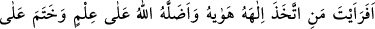
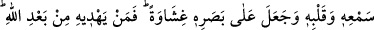
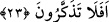
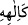

O mal ve kazanca gönül bağlama.
Onu kesenden çıkar,
Gölgen o mal ve kazancın üzerine düşmesin.
23. Hevâ ve hevesini tanrı edinen ve Allah’ın (kendi katındaki) bir bilgiye göre
saptırdığı, kulağını ve kalbini mühürlediği, gözünün üstüne de perde çektiği
kimseyi gördün mü? Şimdi onu Allah’tan başka kim doğru yola eriştirebilir? Hâla
ibret almayacak mısınız?
“Hevâ ve hevesini”, “Keyfini” habis nefsinin arzu ettiği şeyleri “tanrı edinen ve
Allah’ın bir bilgiye göre” aslî fıtratını değiştirip adaletinin gereği olarak “saptırdığı,
kulağını” mühürleyip artık öğüt ve nâsîhatlerden etkilenmez, hakkı dinlemez “ve
kalbini”, âyet ve uyarıları düşünemeyip hakkı anlamaz hale getirip “mühürlediği,
gözünün üstüne de” gönül gözüyle görüp ibret almasına engel olan “perde çektiği
kimseyi gördün mü?”
Bu kişinin hidâyetten kör olup azgınlıkta devam etmesinin gereği olarak “Şimdi onu
Allah’tan başka kim doğru yola eriştirebilir?” Allah’ın bu kişiyi sapıtmasından sonra
kim doğru yolu gösterecek? “Hâla ibret almayacak mısınız?” Ey insanlar Düşünmüyor
musunuz? ki hidâyete Allah’tan başka kimsenin mâlik olamadığını bilesiniz ve öğüt
alasınız.
Şa’bî şöyle demiştir:
Bu hevâ kişinin habis nefsinin arzu ettiği şeydir.
Sahibini cehenneme yuvarladığı için hevâ denmiştir.
Bu söz, hidâyete tâbi olmayı bırakıp nefsin hevâ ve hevesine uyan kimsenin halinden
hayreti ifâde etmektir. Bu kişi sanki nefs ve hevâsına ibâdet etmiş gibidir. Burada
“istiârey-i temsîliyye” vardır. Yahut teşbih edâtı hazfedilmiştir. İfadenin aslı “ yâni
“hevâsını ilah gibi edindi” demektir. Mânâ, “sen bu adama bakıp gördün mü? Bu durum
gerçekten ilginçtir” demektir.
Bu âyetin izâhı, Furkân sûresi 42. âyette geçmiştir. Âyette şöyle işârî bir mânâ vardır:
“Kim müşâhede olmaksızın kendi kendine bir mertebede durup beklerse, o kimse hevâ
ehlinden olup Mevlâdan başkasına ibâdet etmiştir.” Hadis-i şerifte şöyle
buyrulmaktadır: “Gök kubbe altında Allah’a nefs ve hevâdan daha sevimsiz hiçbir